ORAÇÕES
SÚPLICA
SUPLICO A SANTA ÁGUEDA, VIRGEM E MÁRTIR AGRADÁVEL AO CORAÇÃO DIVINO PELO MÉRITO DA SUA CASTIDADE E PELA FORÇA DO SEU MARTÍRIO, QUE INTERCEDA JUNTO AO DEUS DA MISERICÓRDIA E DA BONDADE, EM MEU BENEFÍCIO E DA MINHA FAMÍLIA, IMPLORANDO O PERDÃO DO SENHOR E NOS CONCEDENDO A GRAÇA DO SEU INFINITO AMOR, A FIM DE QUE POSSAMOS CONCLUIR DIGNAMENTE A MISSÃO EXISTENCIAL QUE ELE MESMO NOS CONFIOU. AMÉM.
JESUS CRISTO, MEU SENHOR E MEU DEUS, EU VOS SUPLICO A VOSSA SANTÍSSIMA MISERICÓRDIA, POR INTERCESSÃO DE SANTA ÁGUEDA, QUE SOUBE SOFRER CORAJOSA E DIGNAMENTE TODAS AS TORTURAS E DORES, PEDINDO TAMBÉM A VOSSA DIVINA GRAÇA PARA INFUNDIR FORÇA E PERSEVERANÇA AO MEU ESPÍRITO, A FIM DE PERMANECER FIEL AO CURSO DA MINHA EXISTÊNCIA, CONFORME A VOSSA DIVINA VONTADE E SEGUNDO A CONFIANÇA QUE O SENHOR DEPOSITOU EM MIM. AMÉM.
OUTRO PEDIDO
Santa Águeda venha em meu socorro, vós que sofrestes terríveis e abomináveis martírios; vós que sentistes tamanha dor, dai-nos vossa coragem para vencer a tristeza e a angústia, transformando-as em alegria e esperança. Curai-me com a vossa fé e me lavai com o sangue do vosso martírio as marcas da doença e dos sentimentos negativos em minha existência. Ó Santa Águeda, dai-me merecer as vossas virtudes e a vossa fidelidade a JESUS CRISTO para vencer os males, os perigos do quotidiano e todas as doenças que ameaçam a vida. Intercedei junto a DEUS PAI pela minha saúde, também da minha família e de todos os que em vós confiam para que a cura seja completa, a fim de que eu possa continuar servindo a DEUS NOSSO SENHOR e aos nossos irmãos na difícil estrada para alcançarmos a eterna ressurreição. Amém!
Rezar o PAI-NOSSO, AVE-MARIA e Glória ao PAI.
FOTOGRAFIAS
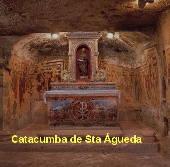
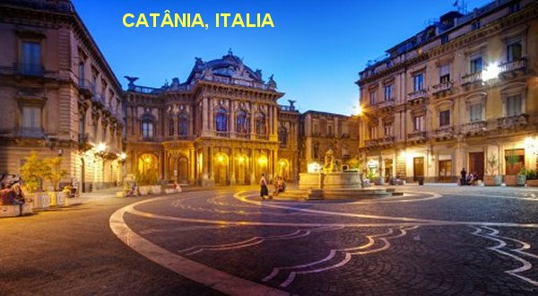
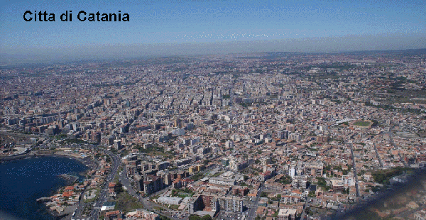
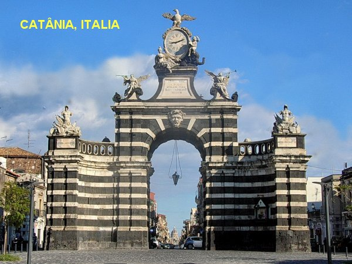
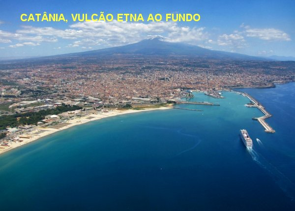
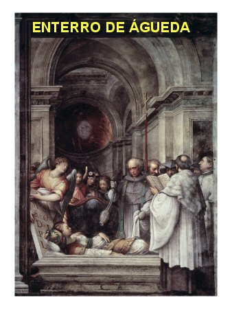
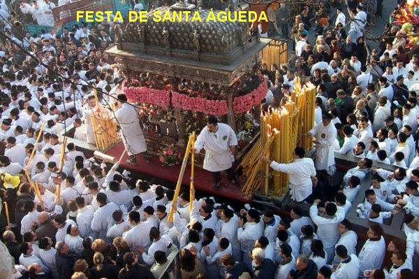
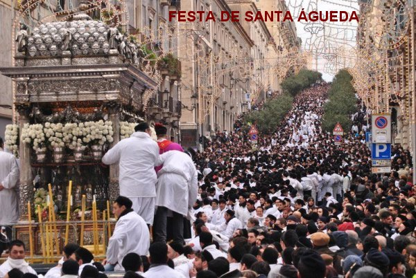
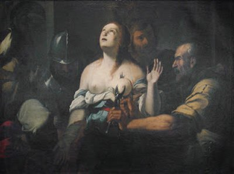
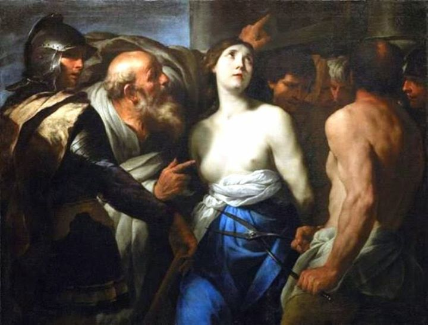
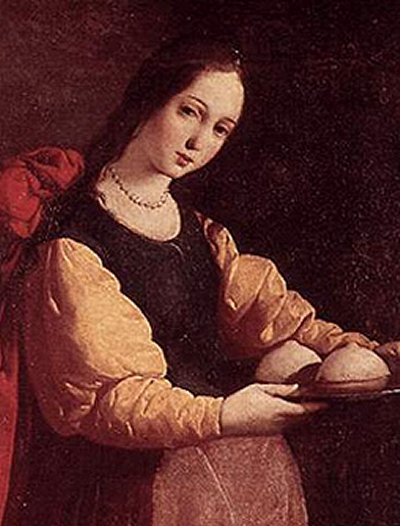
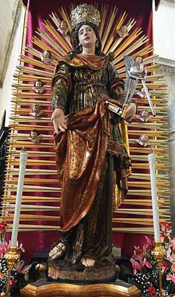
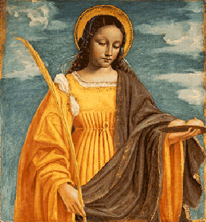
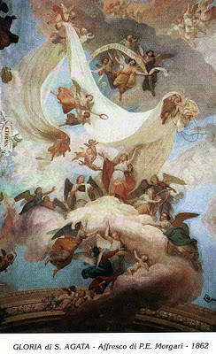
CONVITE
Visite o PORTAL DO APOSTOLADO, no endereço abaixo e tenha a oportunidade de conhecer os nossos Sites, todos eles construídos e bem fundamentados na Sagrada Escritura, nas Tradições Cristãs, nas Manifestações Sobrenaturais e na Vida e Obra dos Santos, com o objetivo de informar somente a verdade.
http://www.apostoladosagradoscoracoes.com/
"E-MAIL"
Para se comunicar conosco, clicar na figura abaixo:

FIRMAS DE BUSCAS